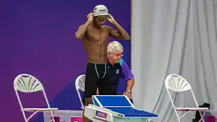
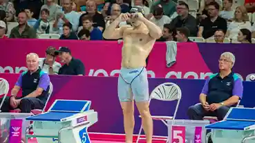
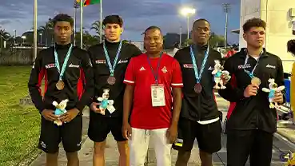

NATACAO PURANATACAO PURA
Últimas Notícias
Natação Pura
Confira as últimas notícias, tempos oficiais e recordes batidos nas competições nacionais. Fique por dentro da cobertura total dos campeonatos de velocidade, fundo e estafetas que definem o topo do ranking da modalidade em Moçambique.
VER NOTÍCIAS
NATACAO PURA NATACAO PURA
NATACAO PURA
Piscina Raimundo Franisse
Abril de 2026Ângela Xicumbi e Hugo de Sousa coroados vencedores da 39ª Edição do Torneio Nadador Completo 2026..

NATACAO PURAAfricano de Juniores de 2023
Dezembro de 2023A Seleção Nacional de natação de Moçambique garantiu a medalha de bronze na prova de estafetas 4×100 metros masculinos
Publicaremos em breve documentos em pdf relativos aos recordes mais recentes de atletas filiados na modalidade de natacao pura.
Serao publicadas em breve as minutas, fichas de inscricao e outros documento que visam a facilitar o processo de gestao